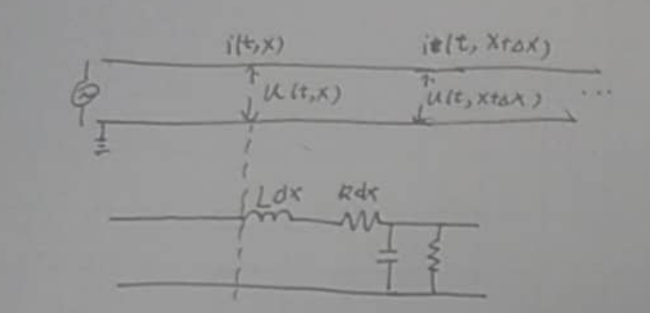
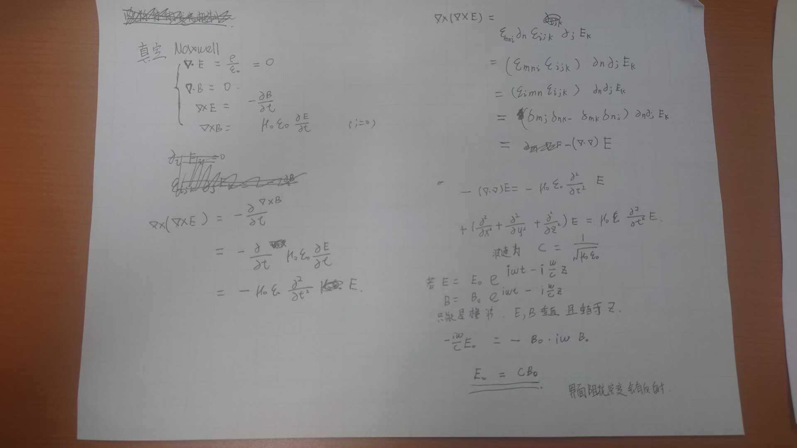
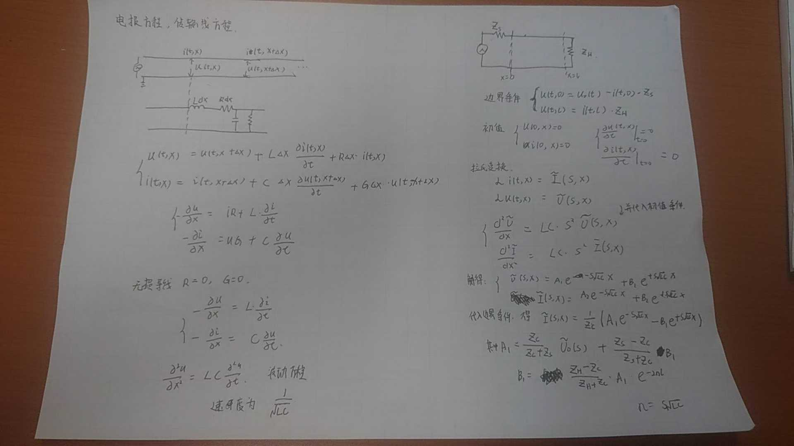

TransmissionLineEq
电磁波传输方程（类比传输线）#
麦克斯韦方程组#
\nabla \cdot E = \frac{\rho}{\varepsilon_0} = 0
\nabla \cdot B = 0
\nabla \times E = -\frac{\partial B}{\partial t}
\nabla \times B = \mu_0 \varepsilon_0 \frac{\partial E}{\partial t}
推导：
\nabla \times (\nabla \times E) = -\frac{\partial}{\partial t}(\nabla \times B)
= -\frac{\partial}{\partial t}(\mu_0 \varepsilon_0 \frac{\partial E}{\partial t})
= -\mu_0 \varepsilon_0 \frac{\partial^2 E}{\partial t^2}
张量形式：
\nabla \times (\nabla \times E) = \varepsilon_{imn} \partial_m (\varepsilon_{njk} \partial_j E_k)
= (\varepsilon_{imn} \varepsilon_{njk}) \partial_m \partial_j E_k
= (\delta_{ij} \delta_{mk} - \delta_{ik} \delta_{mj}) \partial_m \partial_j E_k
= \partial_j \partial_m E_m - (\nabla \cdot \nabla) E
最终波动方程：
-(\nabla \cdot \nabla) E = -\mu_0 \varepsilon_0 \frac{\partial^2 E}{\partial t^2}
\left(\frac{\partial^2}{\partial x^2} + \frac{\partial^2}{\partial y^2} + \frac{\partial^2}{\partial z^2}\right) E = \mu_0 \varepsilon_0 \frac{\partial^2 E}{\partial t^2}
波速为：
c = \frac{1}{\sqrt{\mu_0 \varepsilon_0}}
平面波解：
E = E_0 e^{i\omega t - i\frac{\omega}{c} z}
B = B_0 e^{i\omega t - i\frac{\omega}{c} z}
E, B 是瞬时量，E_0, B_0 相互垂直。
-\frac{i\omega}{c} E_0 = -B_0 \cdot i\omega
E_0 = cB_0
传输线#
电报方程（传输线方程）#

方程推导#
u(t,x) = u(t,x+\Delta x) + L\Delta x\frac{\partial i(t,x)}{\partial t} + R\Delta x \cdot i(t,x)
i(t,x) = i(t,x+\Delta x) + C\Delta x \frac{\partial u(t,x+\Delta x)}{\partial t} + G\Delta x \cdot u(t,x+\Delta x)
\begin{cases}
-\frac{\partial u}{\partial x} = Ri + L\frac{\partial i}{\partial t} \\
-\frac{\partial i}{\partial x} = Gu + C\frac{\partial u}{\partial t}
\end{cases}
无损线（R=0, G=0）#
\begin{cases}
-\frac{\partial u}{\partial x} = L\frac{\partial i}{\partial t} \\
-\frac{\partial i}{\partial x} = C\frac{\partial u}{\partial t}
\end{cases}
\frac{\partial^2 u}{\partial x^2} = LC\frac{\partial^2 u}{\partial t^2}
波速为：
v = \frac{1}{\sqrt{LC}}

边界条件#
\begin{cases}
u(t,x) - i(t,x)Z_s = 0 \\
u(t,L) = i(t,L)Z_L
\end{cases}
初始值：
u(t=0,x) = 0, \quad i(t=0,x) = 0
\frac{\partial u}{\partial t}(t=0,x) = 0, \quad \frac{\partial i}{\partial t}(t=0,x) = 0
拉普拉斯变换#
\mathcal{L}[i(t,x)] = \tilde{I}(s,x)
\mathcal{L}[u(t,x)] = \tilde{U}(s,x)
\begin{cases}
-\frac{\partial \tilde{U}}{\partial x} = sL\tilde{I} \\
-\frac{\partial \tilde{I}}{\partial x} = sC\tilde{U}
\end{cases}
\frac{\partial^2 \tilde{U}}{\partial x^2} = s^2LC\tilde{U}
解：
\tilde{U}(s,x) = Ae^{-s\sqrt{LC}x} + Be^{+s\sqrt{LC}x}
\tilde{I}(s,x) = \frac{1}{Z_c}(Ae^{-s\sqrt{LC}x} - Be^{+s\sqrt{LC}x})
其中：
Z_c = \sqrt{\frac{L}{C}}
A_1 = \frac{Z_c}{Z_s+Z_c} \tilde{U}_0(s) + \frac{Z_s-Z_c}{Z_s+Z_c} B_1
B_1 = \frac{Z_L-Z_c}{Z_L+Z_c} A_1 e^{-2\gamma l}
\gamma = s\sqrt{LC}
拉普拉斯逆变换#
- \tilde{U}_0(s) \rightarrow U_0(t)
- \tilde{U}_0(s)e^{-\gamma x} \rightarrow U_0(t-\sqrt{LC}x)（行波）
- \tilde{U}_0(s)e^{+\gamma x} \rightarrow U_0(t+\sqrt{LC}x)（反射波）
匹配始端#
\quad Z_s = Z_c
u(t,x) = \frac{1}{2} U_0(t-\frac{x}{v}) + \frac{1}{2}\rho U_0(t-(2l-x)/v)
\rho = \frac{Z_L-Z_c}{Z_L+Z_c}
瞬时匹配示例#
R_s = 100\Omega, \quad Z_c = 150\Omega, \quad Z_L = 1k\Omega, \quad
V_{s} = 75V
电线传输到终端，反射：
I = \frac{V}{Z_c+Z_s}
t=0 时，输入终端，波 V_i：
V_i = \frac{Z_c}{Z_c+Z_s}V_s = 6V
I_i = \frac{1}{Z_c+Z_s}V_s = 40mA
| 时间段 | 始端电压 | 始端电流 | 时间段 | 终端电压 | 终端电流 |
|---|---|---|---|---|---|
| 0 - 2τ | V_i = 6V | I_i = 40mA | 0 - 2τ | 0 | 0 |
| 2τ⁺ - 4τ | V_i + (V_{r1} + V_{r2}) = 9.5V | I_i + (I_{r1} + I_{r2}) = 4mA | τ⁺ - 3τ | V_i + V_{r1} = 10.4V | I_i + I_{r1} = 10mA |
| 4τ⁺ - 6τ | V_i + (V_{r1} + V_{r2}) + (V_{r3} + V_{r4}) = 8.9V | I_i + (I_{r1} + I_{r2}) + (I_{r3} + I_{r4}) = 9.3mA | 3τ⁺ - 5τ | (V_i + V_{r1}) + (V_{r2} + V_{r3}) = 8.9V | (I_i + I_{r1}) + (I_{r2} + I_{r3}) = 8.4mA |
\rho_L = \frac{1000-150}{1000+150} = 0.74
总结#
只要特性阻抗和负载阻抗不匹配，就会发生反射。始端和终端都不匹配则会发生多次反射。
附录#
原图：



最后更新:
2025-08-13
创建日期: 2025-08-13
创建日期: 2025-08-13